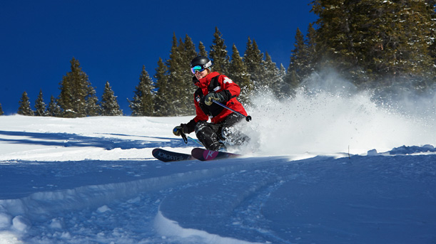
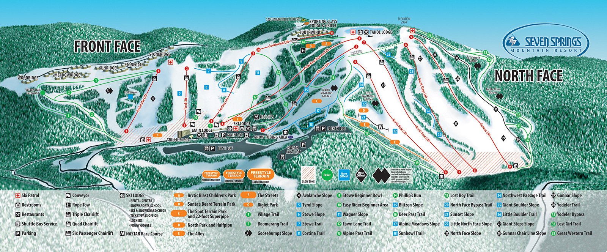

Ski Patrol App
Tyler Comisky, Nicolas Latiolais, Andrew Toader, and Jason Weger
Conjecture
Many skiers and snowboarders ride the slopes at Seven Springs every winter, and with that comes a risk of injury. Currently, there is no good way to report an accident other than telling a lift attendant at the top or bottom. A phone application with an accident report form that can immediately notify Ski Patrol of an injury could greatly decrease Ski Patrol response time and potentially increase patient outcome from injury. This way, even people on the chairlift who witness an accident from afar can report an injury.
Definition
Our app will greet the user with two buttons: one to report an accident, and another to call ski patrol. The accident report form will ask the user for the name of the slope, the location on the slope, and the condition of the victim. The call button will automatically dial the ski patrol number after the user confirms that they want to call. This provides a quick and simple way to contact ski patrol and to get someone the care they need as quickly as possible.

Quality
Not only will this app increase the efficiency of getting ski patrol attention, it will decrease the time an injured skier or snowboarder will be without the medical care needed. Skiing and snowboarding are difficult sports and can be dangerous, especially for starters. Whether people fall the wrong way or run into someone else on the slope, injuries happen and increasing the efficiency of medical care benefits these riders. The current method of finding help on the slopes works, but improving this method allows for quicker medical care for skiiers and snowboarders.

Policy
We plan to create this app to be the easiest source of medical care for injuried skiers and snowboarders at Seven Springs. This app will be easy to use and include basic buttons, text boxes, and drop down menus with descriptions. This allows for the quickest contacting of ski patrol. As technology continues to become more prominent, more skiers and snowboarders carry their devices with them when riding, so an app on these devices is the most efficient method of contacting ski patrol.
the Elevator Pitch Generator
Copyleft. S.J. Quigley, University of Pittsburgh